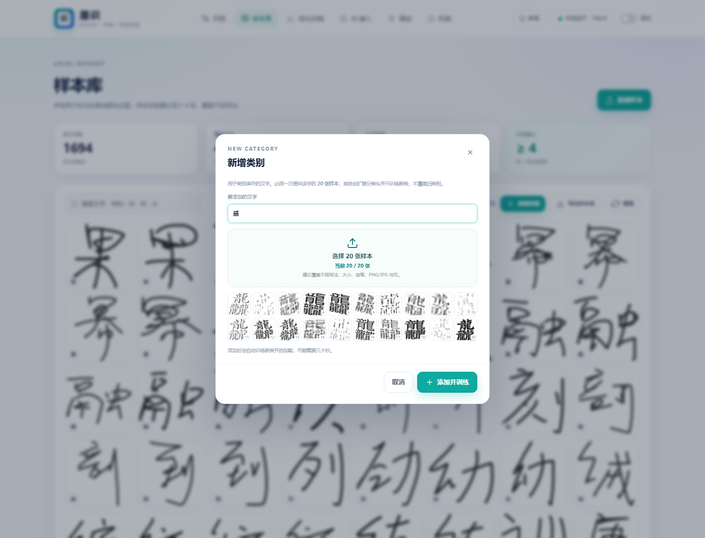
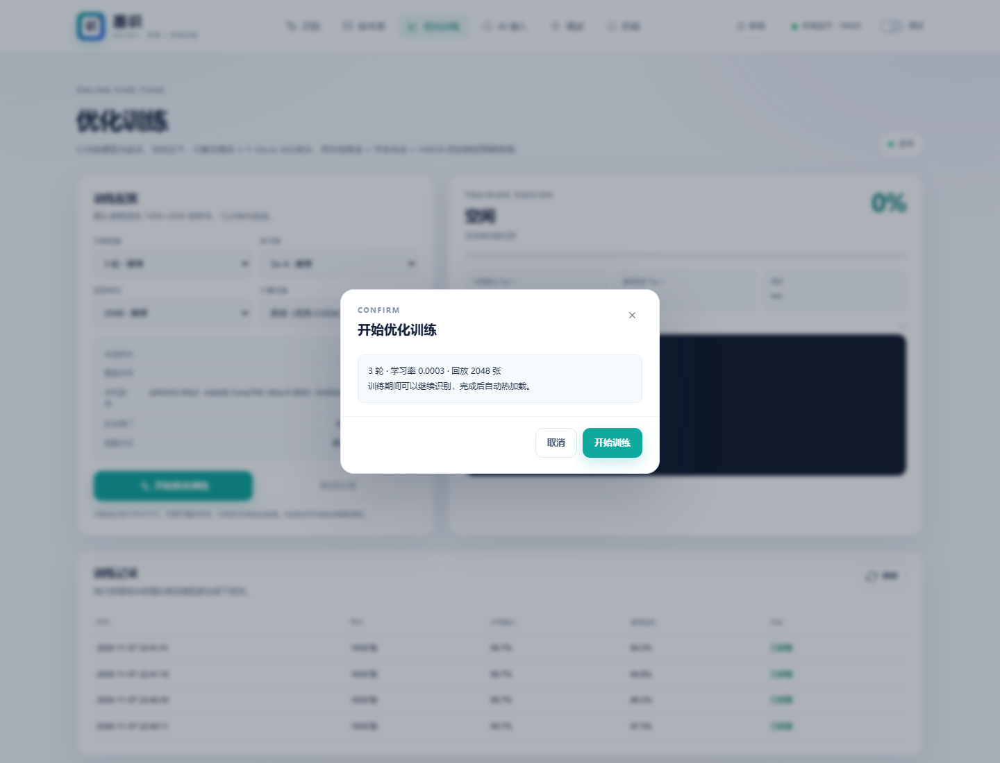
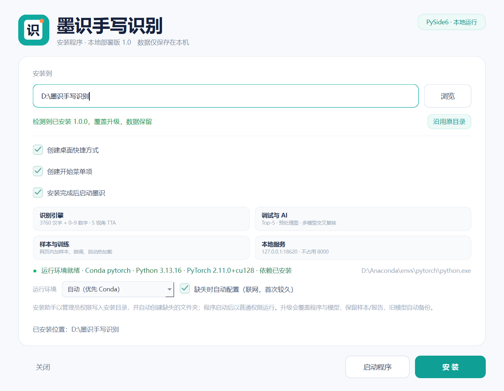

5200 类汉字底座
从 3760 类扩展到 5200 类，覆盖常用字与 GB2312 二级字；旧类回放保持 98.17%。
5200 classes墨识是一套本地优先的手写识别工作台：5200 类汉字、数字串动态识别、 20 张样本新增类别、网页内优化训练，以及可复核的 AI 桥接。 不把数据交出去，也能把每一个字认真识别清楚。
完整版 zip 在百度网盘 · 提取码 8912 · 打开网盘 ↗
从识别到修正，从新增类别到训练部署，每一环都为“自己的字迹”服务。
从 3760 类扩展到 5200 类，覆盖常用字与 GB2312 二级字；旧类回放保持 98.17%。
5200 classes类别库外的手写字也能加入：输入汉字，一次提供 20 张样本，扩展分类头并只训练新类。
custom category一行连续写多位数字，按连通域分割；开启动态识别后，停笔约 0.7 秒自动出结果。
multi-digit冻结主干、解冻最后 3 个 block 与分类头；本地样本 + 字体合成 + HWDB 回放，完成后自动热加载。
fine-tune通义千问 VL、智谱 GLM-4V、OpenAI、Moonshot、DeepSeek、Ollama 或自定义端点，参与逐字对比与权重融合。
optionalPySide6 安装向导、管理员权限、自动建目录、Conda 优先；覆盖升级时保留样本、报告与 AI 配置。
Windows识别不是终点，修正、样本、训练和复核都在同一个本地服务里完成。
识别、新增类别、训练确认和安装向导都使用同一套视觉语言。



网页体验版只保留本地模型推理；完整版才有训练、样本库、AI 复核和安装助手。
在浏览器里加载打包时的 5200 类模型快照，适合快速试写。没有训练入口，不调用 AI API，也不能修改样本库。
包含 5200 类模型、1,694 张样本、PySide6 桌面壳、网页训练、新增类别、AI 桥接和调试台。
8912
安装助手会处理 Python 环境、模型和快捷方式；启动后浏览器与桌面窗口共享同一个本地服务。
选择目录，安装助手自动创建文件夹；本机已有 Conda 时优先复用。
桌面快捷方式启动 PySide6 窗口，地址固定为本机回环，不监听局域网。
写一个字，查看 Top-5；错了就修正并标为样本，下一次训练会记住它。
127.0.0.1。不追求把参数堆到最大，而是让识别、训练和部署在同一条链路上可控、可回滚。
桌面层使用 PySide6 承载同一套本地 Web 界面；推理、训练、样本和 AI 配置在同一台机器上完成。 没有外部数据库，也没有默认的云端上传。
默认不会。识别、样本、训练和报告都在本机。只有你主动配置并调用云端 AI 时，图片或文本才会发往你填写的那一个端点；API Key 用 Windows DPAPI 加密保存。
为了避开原来 8000 端口上的旧服务。默认 18620，被占用时自动顺延到 18621–18649；服务只绑定 127.0.0.1，局域网其他设备无法访问。
打开「样本库 → 新增类别」，输入这个字并一次提供 20 张样本。系统会扩展分类头、只训练新类，并用旧类回放保护原来的识别能力。
可以。数字模式支持在一行连续写多位，按连通域分割；开启动态识别后，停笔约 0.7 秒自动出结果。
安装助手会先检测本机环境；有 Conda 时优先复用，没有可用环境时可以选择新建 Conda 或 venv。详细说明见 运行环境说明。
v1.0.0 · 5200 类与新增类别
汉字库扩展到 5200 类；新增「20 张样本」类别添加；数字串动态识别；训练确认弹窗对比度修复；本机硬件型号写入训练报告。
DeepSeek 与样本重打包
新增 DeepSeek 文本复核；样本库可导出 ZIP；安装助手支持把当前样本与模型重新打包。
安装与环境
Conda 优先、管理员安装、自动创建目录、桌面安装助手、覆盖升级保留样本与配置。